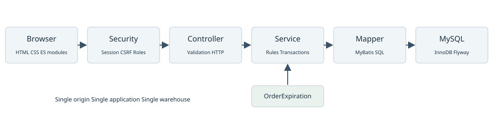

StockFlow 项目文档中心
StockFlow 是面向 Java 后端实习与校招展示的单仓库存与订单履约系统。本套文档供开发者、测试者、演示者及技术评审使用，说明系统要解决的问题、已实现的规则、设计依据和交付边界。
文档版本为 1.1，编制日期为 2026-10-29，功能基准为提交 33c830f，并包含2026-10-29第一阶段前端结构整理。它是当前实现的整理版；需求编号用于建立可追踪基线，不代表这些文档在开发前已完成或已经正式审批。
阅读PDF总册 · 开启离线HTML总册。Markdown为可编辑原稿；总册与原稿采用相同内容基线。
阅读入口
| 文档 | 回答的问题 | 主要读者 |
|---|
| 项目概述 | 为什么做、做到哪里、采用什么技术 | 所有人 |
| 需求规格 | 每类用户需要什么、如何验收 | 需求与测试 |
| 系统设计 | 模组怎么协作、事务与权限放在哪里 | 开发与评审 |
| 业务规则 | 状态、库存、幂等及统计的精确含义 | 开发与测试 |
| 数据库设计 | 表、字段、索引、约束和迁移 | 后端与维护 |
| API 参考 | 鉴权、参数、响应、错误和接口清单 | 前后端联调 |
| 部署与运维 | 如何启动、配置、升级、备份和排障 | 维护与接手者 |
| 测试与验收 | 测哪些、如何重现、哪些尚未验收 | 测试与评审 |
| 使用手册 | 买家与仓管如何完成业务 | 演示与用户 |
| 维护与演进 | 如何改动、发布、处理已知限制 | 后续开发者 |
| 项目展示与答辩 | 如何如实介绍、演示和准备追问 | 项目作者 |
首次接手建议依序读项目概述、业务规则、部署与运维；开发前核对接口与数据库设计；演示前执行使用手册和验收清单。
状态标记
- 已实现：可在基准版本代码找到实现；不等于所有环境已验收。
- 已有验证：有具体提交、测试报告、HTTP 记录或 CI 结果支持。
- 待验收：有实现或验收步骤，但缺少对应版本的实际执行证据。
- 建议／规划：后续工作，不计入目前功能。
2026-10-29第一阶段结构整理已重跑89项前端测试、完成打包和匿名模块HTTP检查；没有重跑后端全套。
2026-10-29 已重新读取 PR 检查，基准提交的 mysql-tests、container-smoke 均为 success。本次文档整理没有重跑整套业务测试；历史本地测试与效能数据保留原执行日期。新入库、退货等流程的 Edge 桌面与手机实操仍待补验，不能用旧截图代替。
文档维护
代码、迁移及测试是实现依据。功能变更时同步更新需求条目、业务规则、接口、数据字典及相应测试，然后更新本页基准与变更记录。docs/plans、docs/specs、docs/*-qa.md 保留历次决策与验证，本目录负责现行阅读入口。
完整线上仓库为 StockFlow，当前功能位于 PR 1 的 codex/operations-hardening 分支；不要假设 main 已包含相同内容。
StockFlow 项目概述
项目定位
StockFlow 管理单一仓库中的商品、实存与预留库存，串接买家下单、确认、仓管发货、买家收货及整单退货。系统透过流水、盘点与只读对账帮助用户解释库存变化，重点在业务一致性和可重现的工程实践。
项目用于学习、作品展示及技术评审。目前是本机演示与 CI 验证形态，没有生产用户、付费交易或正式服务可用性承诺。RuoYi-Vue 是另一个学习项目；StockFlow 没有采用 RuoYi 框架，也没有使用其课程库 zzyl10。
问题与成果
| 业务问题 | 当前处理方式 | 可观察结果 |
|---|
| 下单与发货时容易混淆可售数量 | 区分实存、预留、可用，使用带条件的库存更新 | 可用等于实存减预留，不允许负库存 |
| 网路重试造成重复下单或入库 | 请求键、内容比对、唯一索引、事务 | 相同内容重试返回已有结果 |
| 商品改名改价影响历史解读 | 订单与单据保存必要快照 | 历史名称和单价不跟随商品改动 |
| 盘点覆盖下单后的新库存 | 记录库存版本，确认时检查版本与预留量 | 过时盘点被拒绝 |
| 只看库存余额无法定位问题 | 库存流水、操作审计、三方只读对账 | 可对照实存、订单占用及累计流水 |
| 部署升级容易重放建表脚本 | Flyway 管理版本与已知旧库接管 | 未知结构拒绝自动升级 |
角色与范围
买家管理本人订单及退货；仓管管理商品、入库、库存、履约、盘点和审计；管理员目前继承仓管权限，没有独立的用户维护或动态权限配置界面。一般注册只能建立买家。
本期包含账号、角色权限、商品、库存预留与收发、低库存预警、入库单、订单、整单退货、流水、盘点、对账、审计、筛选导出、角色工作台与只读咨询助手。不包含多仓、库位、批次、序号、供应商采购、财务结算、真实支付退款、物流对接或消息推送。
技术基线
| 层次 | 现有技术与版本依据 |
|---|
| 语言与构建 | Java 17、Maven；应用版本 0.1.0-SNAPSHOT |
| 后端 | Spring Boot 4.1.0、Spring MVC、Spring Security、Bean Validation |
| 数据访问 | MyBatis Starter 4.1.0、MySQL Connector/J、HikariCP |
| 数据库 | MySQL 8；CI 与 Compose 固定映像 8.0.43；InnoDB |
| 结构升级 | Flyway，执行 B004 基线及 V005、V006 迁移 |
| 前端 | HTML、CSS、原生 JavaScript ES modules、Canvas 粒子；没有 Vue／React 构建链 |
| 测试 | JUnit、Spring Boot Test、真实 MySQL HTTP 整合测试、Node 内建测试 |
| 交付 | 可执行 JAR、PowerShell 启动脚本、Docker Compose、GitHub Actions |
目前未引入 Redis、消息队列、微服务、分散式事务、Elasticsearch、JWT 或大模型服务。咨询助手是本地规则与只读数据查询，工作台版本随 JAR 提供；外部 Node 独立聊天页是可选配套，不是 Java 核心依赖。
交付物与判定
交付物包括源代码、迁移、测试、启动脚本、CI 工作流、版本化文档及验证记录。可以主张目前已建立单仓业务闭环、事务与幂等控制、数据库迁移和自动化验证；不能主张已上线运营、支撑特定 QPS、完成渗透测试或全量浏览器验收。
程序依据：pom.xml、application.properties、auth/SecurityConfiguration.java、各业务 Controller／Service、compose.yaml、.github/workflows/verify.yml。路径均以仓库根目录为准。
StockFlow 需求规格
文档目的与范围
本规格定义单仓商品与订单系统的可观察行为，供后续开发和测试使用。需求优先级 P0 表示一致性与核心闭环必需，P1 表示操作效率与可维护性，P2 表示可选演进。下表均为当前已实现需求；独立列出的演进需求不视为已交付。
功能需求
| 编号 | 优先级 | 需求与验收条件 |
|---|
| FR-01 | P0 | 账号注册登入退出。注册只能建立买家且不自动登入；重复账号返回409；退出使当前会话失效，未登入读取身份返回401。 |
| FR-02 | P0 | 角色与归属隔离。买家不能执行仓管操作；本人订单与退货限定本人，他人资源返回404；管理员具有仓管权限。 |
| FR-03 | P0 | 商品建立与维护。编码唯一且建立后不可改；可修改名称、价格、启用状态；建立时同时生成零库存。停用商品不可新增订单，既有订单可继续履约。 |
| FR-04 | P0 | 库存与收货。显示实存、预留、可用、安全库存；直接收货幂等；可用为实存减预留，写入失败不留下部分库存或流水。 |
| FR-05 | P0 | 多商品下单。每单最多10种不同SKU，每种合并数量1至99；仅在售商品可下单；价格、名称、编码、总额由后端确定；任一商品不足整单回滚。 |
| FR-06 | P0 | 订单履约与到期。待确认可确认、取消或到期释放；已确认仅仓管发货；已发货由本人收货；重复成功操作不重复扣库。 |
| FR-07 | P1 | 历史数据。新订单保留下单时名称、编码、单价；改名改价不改历史；旧数据缺少名称时明示未知，不以现名伪装。 |
| FR-08 | P1 | 库存流水与预警。查询收货、预留、释放、发货、盘盈、盘亏、退回；在售商品可用量严格低于安全线时预警，无推送通知。 |
| FR-09 | P0 | 库存盘点。建立单商品草稿保留数量与版本快照；过时版本或实盘低于预留拒绝确认；确认差异调整、流水、审计同事务，取消不改库存。 |
| FR-10 | P1 | 只读对账与操作审计。比较库存余额、有效订单占用及累计流水；揭示差异但不自动修复。记录已接入操作的执行者、前后值、请求编号。 |
| FR-11 | P0 | 正式入库单。仓管建立来源与1至10行唯一SKU草稿，逐行数量1至1000000；确认后整单入库并记流水、审计；取消草稿不入库。 |
| FR-12 | P0 | 整单退货。本人已完成订单可申请；有效或成功退货最多一张；仓管核验后整单回库；本人可取消待处理申请，原订单仍为已完成。 |
| FR-13 | P1 | 查询与导出。按资源支援关键字、状态、日期／金额范围；列表保存查询地址。订单与库存按权限和当前条件导出，10000条上限，超限422。 |
| FR-14 | P1 | 角色工作台。全库汇总与最近七日趋势；买家只统计本人订单；仓管查看库存、待发货与预警。订单金额不标为营收。 |
| FR-15 | P1 | 前端互动与咨询。深色界面、全页粒子与悬停反馈；手机断点、减少动态效果、对话框键盘操作；只读助手沿用会话，不代替业务写入。 |
| FR-16 | P0 | 结构迁移与可运行性。空库建表、已知旧库保留数据升级、未知结构拒绝；存活与数据库就绪分离；运行指标仅授权角色可读。 |
权限矩阵
| 能力 | 未登入 | 买家 | 仓管 | 管理员 |
|---|
| 登入页与注册、CSRF、存活／就绪 | 可访问 | 可访问 | 可访问 | 可访问 |
| 商品读取与角色工作台 | 否 | 是 | 是 | 是 |
| 建立与维护商品、入库与盘点 | 否 | 否 | 是 | 是 |
| 本人下单、确认、取消、收货 | 否 | 本人 | 否 | 否 |
| 全部订单查询与发货 | 否 | 否 | 是 | 是 |
| 建立与取消退货 | 否 | 本人 | 否 | 否 |
| 退货列表及详情 | 否 | 本人 | 全部 | 全部 |
| 验收退货回库、流水、对账、审计、指标 | 否 | 否 | 是 | 是 |
商品读接口没有按买家身份强制隐藏停用商品；买家界面通常使用在售筛选，服务端下单时再次检查启用状态。禁止把「前端看不到按钮」当作权限控制。
非功能需求与验收口径
| 编号 | 要求 | 当前设计及验收口径 |
|---|
| NFR-01 一致性 | 任一业务失败不留下部分库存 | 真实MySQL下验证多商品失败、重复流水、盘点版本与事务回滚 |
| NFR-02 并发 | 多用户竞争不能超卖或重复回库 | 条件更新、行锁及唯一键；用有限场景测试，不承诺任意并发容量 |
| NFR-03 安全 | 身份归属、角色、CSRF、密码哈希 | Cookie会话写入带CSRF，Basic相容客户端豁免CSRF；局部安全测试不等于全面安全认证 |
| NFR-04 可维护 | 模组职责清晰、结构变更可追踪 | 分包Controller／Service／Mapper；新增迁移，不重写已执行档案 |
| NFR-05 可观测 | 能判断依赖故障并关联错误 | requestId、就绪503、固定桶计数；不承诺外部监控告警已接入 |
| NFR-06 可用性 | 桌面与手机能完成核心流程 | 列表／弹窗可操作、文字可读、减少动画生效；新流程真实Edge验收待补 |
| NFR-07 性能 | 在明确数据量下保存可重现证据 | 保存HTTP样本、SQL计划、环境及数据分布；没有正式SLA或QPS目标 |
| NFR-08 数据保护 | 开发测试隔离、升级不清空业务 | 测试先校验库名；私密设定不提交；备份恢复流程见运维文档，恢复演练尚待执行 |
用户故事与例外
UC-01 仓管收货：仓管建立商品、填写入库单来源和明细、核对后确认，系统增加实存并留下单据与流水。重试相同键和内容返回既有单据；相同键换内容返回409，不能悄悄建立新单。
UC-02 买家履约：买家下单立即预留，期限内确认；仓管发货同时减少实存和预留；本人收货后完成。未确认取消或超时只释放预留。确认与超时竞争由后端状态及数据库锁决定。
UC-03 库存盘点：仓管输入实盘与原因，建立草稿后若有收发或预留变化，原草稿失效，需要重新建立。不得调低到已预留数量以下，也不能用盘点掩盖缺失历史流水。
UC-04 实物退货：本人完成订单后申请整单退货，仓管核实商品全部收到且可售再确认。未收齐、损坏不可售、部分退货、换货、退款没有对应自动处理流程，应暂停确认并人工核实。
变更管理
新需求先描述角色、触发条件、数据变化及失败处理，再判断是否已有能力可复用。修改核心数量规则、状态机、权限、付款范围或仓库模型属重大范围变更，需要重新评估并更新验收。完整需求与测试对应见测试文档。
StockFlow 系统设计
架构与边界
系统采用单体、同源部署：Spring Boot 同时提供静态前端和REST接口，一个 MySQL 数据库保存业务状态。这符合单仓演示规模，避免为学习展示额外引入跨服务事务与部署成本。
前端 ES modules → Spring Security及请求编号过滤器 → Controller参数验证 → Service权限归属与事务 → MyBatis Mapper → MySQL InnoDB。订单到期任务直接调用同一OrderService，所有业务写入仍经过后端规则。

模组职责
| 包或资源 | 职责与代表类型 |
|---|
| auth | 账号注册、BCrypt、身份、会话、CSRF、演示账号；AccountService、SecurityConfiguration |
| catalog | SKU读写、商品启停、零库存初始化、商品审计；CatalogService |
| inventory | 实存／预留条件更新、直接收货、流水、预警、安全线；InventoryService、InventoryMapper |
| order | 下单规范化、幂等、确认取消、收货、发货和到期释放；OrderService |
| fulfillment | 仓管订单入口及定时到期扫描；FulfillmentController、OrderExpiration |
| documents | 多行入库与整单退货的建立、查询、确认和取消；DocumentService |
| operations | 盘点草稿、版本检查、审计、对账和趋势；StocktakeService、AuditService |
| workbench | 全量分页、范围共用、工作台汇总、受限CSV；WorkbenchService、QueryRange |
| runtime与api | Flyway旧库校验、就绪、固定指标、统一错误、requestId |
| static | app.js主流程，ui-helpers通用界面工具，inventory-reports库存报表，query-state、document-state、business-documents及咨询助手 |
事务与并发
新增订单在同一事务建立主表、预留库存、保存价格与商品快照、写明细及RESERVE流水、计算总额。任一SKU失败整单回滚。预留SQL直接判断 on_hand-reserved >= quantity，不采用前端读取数量再无条件覆盖。
确认、取消与发货先锁订单行，再按SKU升序处理库存；多商品规范化使用TreeMap固定顺序，降低交错锁顺序风险。建立订单遇悲观锁竞争最多尝试3次，仍失败回503 RETRY_LATER，客户端保留原requestKey重试。此重试策略只存在于相应下单路径，不能描述为所有接口都有自动重试。
入库／退货确认锁单据，依SKU顺序锁库存，更新实存与版本、流水、单据状态、审计同事务。退货申请另锁原订单，检查有效／成功退货数量，确保不同请求键也不能重复建立有效退货。这个限制由服务事务及锁保证，数据库没有单独的「每订单唯一有效退货」索引。
盘点先锁草稿及库存行，比较保存版本。库存实物或预留变动增加version，即使数量往返恢复也视为新版本；修改安全线不改version。需要一致的列表总数与行数据时，相关查询使用只读REPEATABLE_READ事务；连接池默认READ_COMMITTED。
前端状态与失败处理
2026-10-29第一阶段已把通用DOM与格式化工具移到 assets/ui/ui-helpers.mjs，把库存流水／预警的加载、渲染和游标交互移到 assets/ui/inventory-reports.mjs。主程序保留初始化及跨页面导航，未更换框架或修改API。
前端以 #orders?... 等Hash保存页面、筛选和页码；列表统计来源是后端完整集合，不是在目前页面做局部过滤。库存流水和预警使用编号游标，其余主列表使用page／size；前端常用容量8、20、50，后端上限100。
身份epoch用于丢弃退出、换账号后的旧请求结果；document-state保存一次提交的数据与请求键，避免未知网路结果时建立另一张单。载入错误时保留已有列表并限制旧操作，提供重试；成功与否以后端响应及重新查询为准。
弹窗支援关闭后焦点恢复，确认退货前有实物核实勾选。该勾选是前端提醒，后端没有独立验收证据字段、附件或双人复核流程。不能把它说成完整的仓库验收留痕。
鉴权与数据安全设计
浏览器使用JSESSIONID会话，闲置超时30分钟，Cookie为HttpOnly、SameSite=Lax。写入先取CSRF，使用回传headerName及token。Basic用于本机脚本与HTTP示例；带Basic前缀的请求在目前实现中豁免CSRF，生产暴露前需要重新评估此相容策略。
方法角色限制在服务端执行，买家编号来自当前Authentication，请求不能指定role、buyerId、价格或总额。错误响应仅包含code、message、requestId，详细例外保存在服务日志；审计储存业务前后值，不储存登入口令。
运行与设计决策
保留同源会话而未采JWT，因目前没有跨域多端需求；保留MySQL条件更新与行锁而未引入Redis分散式锁，因一致性边界都在同一数据库；使用有限固定指标而未搭完整监控平台，因当前是可演示原型。
就绪接口检查数据库连接、V006成功记录及订单快照字段可解析性，不是完整业务表校验。指标为进程内累加，重启清零；expiry.succeeded表示expire呼叫未抛例外，可能包含竞争后无需修改的情况，不等同成功取消订单的精确数量。
时间与货币
金额使用BigDecimal与DECIMAL，不使用浮点计算；日期筛选按created_at，结束日转次日零点的排他上界。数据库时间字段使用DATETIME(6)，API使用LocalDateTime，未带时区；JDBC设定connectionTimeZone=UTC，但SQL CURRENT_TIMESTAMP与自然日仍受数据库session时区影响。因此目前没有统一的多时区业务契约，跨环境部署前要固定并验证时区，不能单凭JDBC参数宣称全部时间已转UTC。
StockFlow 业务规则
库存模型
BR-01 每种商品在唯一仓库有一行库存。H表示实存onHand，R表示预留reserved，A表示可用available。始终要求 0 <= R <= H <= 1000000000，A = H - R。预留是尚未发货的订单占用；确认订单不再增加一次预留。
| 流水类型 | 业务事件 | H变化 | R变化 |
|---|
| INBOUND | 直接收货或入库单确认 | +q | 0 |
| RESERVE | 下单 | 0 | +q |
| RELEASE | 待确认取消或到期 | 0 | -q |
| SHIP | 仓管发货 | -q | -q |
| ADJUST_IN | 盘盈 | +q | 0 |
| ADJUST_OUT | 盘亏 | -q | 0 |
| RETURN_IN | 整单退货确认 | +q | 0 |
流水quantity一律是正数，方向由operationType决定。available为查询计算值，不额外储存，以免维护第三个可分歧余额。
订单状态
BR-02 订单主路径为 PENDING_CONFIRM → CONFIRMED → SHIPPED → COMPLETED；仅PENDING_CONFIRM可以转CANCELLED。取消原因USER与EXPIRED分别表示本人取消与到期。不存在付款、退款、部分发货或重新开单状态。
| 操作 | 操作者 | 前置状态 | 成功后状态 | 已成功重试 |
|---|
| 建立 | 买家 | 在售且可用充足 | PENDING_CONFIRM | 同键同内容回既有订单 |
| 确认 | 本人 | 待确认且未到期 | CONFIRMED | 已确认／发货／完成回目前状态 |
| 取消 | 本人 | 待确认 | CANCELLED | 已取消回目前状态 |
| 发货 | 仓管／管理员 | 已确认 | SHIPPED | 已发货／完成回目前状态 |
| 收货 | 本人 | 已发货 | COMPLETED | 已完成回目前状态 |
| 到期取消 | 系统任务 | 待确认且已到期 | CANCELLED | 已非待确认则不再释放 |
BR-03 确认期限由数据库建立时设定为15分钟。扫描默认每批完成后等待30秒，每次最多100笔；扫描游标会绕回，单笔失败不阻挡后续订单。到期不代表画面于整点立刻更新，数据库状态和任务处理存在扫描延迟。
BR-04 每单至多10种SKU，每种合并1至99件，原始明细最多990行。重复SKU会合并并按SKU排序。金额为各明细quantity乘unitPrice之和；前端传入单价、总额、身份、状态等未定义字段会被拒绝。
幂等与重试
BR-05 requestKey／operationKey格式为1至64位ASCII字母数字及 ._:-，首位必须是字母或数字。一次业务意图一个键；收到不确定结果时，先查询或重试同键同内容，不自动换键。
| 业务 | 键的范围 | 内容比对 |
|---|
| 订单 | buyerId加requestKey | 规范化SKU与数量的SHA-256 |
| 直接收货 | 流水类型、actorId加operationKey、SKU | 数量 |
| 盘点建立 | actorId加requestKey | SKU、目标数量、trim后原因 |
| 入库单建立 | actorId加requestKey | trim后来源、排序SKU与数量的SHA-256 |
| 退货建立 | buyerId加requestKey | 原订单号与trim后原因的SHA-256 |
同键不同内容返回409 IDEMPOTENCY_CONFLICT。幂等返回目前资源状态，不保证重播最初那次HTTP原文；成功后修改商品价钱不会重新计算既有订单。
入库与退货
BR-06 入库单状态为DRAFT、CONFIRMED、CANCELLED。来源必填且最多240字符，1至10行不重复SKU，每行1至1000000件。草稿不增加库存，未提供草稿编辑接口；内容需更正时取消原草稿再建立。确认按整单事务执行，已确认不可撤销。
BR-07 退货仅限本人COMPLETED订单的全部SKU及原数量，原因必填且最多240字符。状态为REQUESTED、CONFIRMED、CANCELLED；REQUESTED由本人取消或仓管确认。取消后可用新键重新申请；只要有REQUESTED或CONFIRMED，就不能再建立另一张有效退货。原订单保持COMPLETED。
仓管确认表示整单商品已收到且可再次销售。系统没有部分收货、不可售库存、拒绝单、退款、费用、凭证或退货期限配置；不满足条件时不要强行确认。后端没有结构化的验收勾选字段。
盘点与对账
BR-08 盘点草稿保存商品快照、实存、预留与version；确认目标0至1000000000且不得低于当前预留。version不符返回STOCK_CHANGED；目标低于预留返回RESERVED_STOCK。零差异可确认并记审计，但不增加零数量流水。
BR-09 对账比较三组数据：库存H与累计物理流水；库存R与累计预留流水；库存R与PENDING_CONFIRM、CONFIRMED订单明细合计。任何一组不等即不一致。差异列表默认只显示不一致；查询只揭示，不修改或重建数据。
快照与查询口径
BR-10 新订单、入库与盘点保存必要商品快照；退货复制原订单快照。V005以前订单的名称与编码保持NULL，显示「历史商品名称未知」，禁止回填现名作历史事实。流水显示名称来自目前商品表，不是历史名称快照。
BR-11 安全库存默认10，支援1至1000000。只有在售且available严格低于各自安全线才进预警；等于安全线属健康。库存列表low表示0小于available小于安全线，empty表示available小于等于0；因此「低库存列表」与含缺货的「预警列表」数量可能不同。
BR-12 所有列表关键字至多120字符；日期from、to包含首尾自然日，按created_at过滤；金额界限可含等号，最多两位小数且非负。入库单和退货列表目前没有日期范围参数。订单总额包含取消订单，七日入库趋势只合计INBOUND、出库只合计SHIP，不包含退货与盘点变动，不能直接当成完整库存收支或财务营收。
审计范围
目前记录SKU_CREATE、SKU_UPDATE、STOCK_POLICY、STOCKTAKE_CREATE／CONFIRM／CANCEL、RECEIPT_CREATE／CONFIRM／CANCEL、RETURN_CREATE／CONFIRM／CANCEL。订单履约透过订单时间字段与库存流水追踪，直接收货透过流水追踪；登入、所有读取以及所有订单操作没有统一进operation_audit。数据库内审计也不是防窜改储存。
StockFlow 数据库设计
数据范围与结构来源
当前有12张业务表，另有Flyway管理的flyway_schema_history。使用MySQL 8 InnoDB；本机私库默认utf8mb4_0900_as_cs，编码、账号、请求键等部分字段使用ASCII及区分大小写比较。Compose和CI库的默认collation由MySQL映像环境决定，不能假设所有环境字串比较完全相同。
本字典逐行取自执行中的迁移源：src/main/resources/db/migration/B004__legacy_schema.sql、V005、V006。SQL仍是DDL权威；下表的键、默认与CHECK按原文保留，所有关系不自动等同于数据库外键。
关系与用途
| 主体 | 关系与意义 |
|---|
| sku与inventory | 每商品最多一行库存，inventory.sku_id同时是PK与FK |
| customer_order与order_item | 一单多SKU，明细以order_id和sku_id复合主键去重 |
| receipt_document与receipt_item | 一张入库单多行，receipt_id及sku_id唯一 |
| customer_return与return_item | 一张退货多行，关联原订单并复制快照；return_id及sku_id唯一 |
| stocktake | 单商品盘点，保存建立时余额与version |
| inventory_ledger | 关联商品，可选order、stocktake、receipt、return来源 |
| app_user与业务执行者 | buyer_id、actor_id为身份逻辑关联，部分没有实体FK |
| operation_audit | entity_type及entity_id多型逻辑引用，保存before／after JSON和request_id |
业务表没有warehouse_id、tenant_id、库位、批次或财务分录，不能用作多仓或多租户结构。商品停用代替删除，现有API没有数据删除入口。
型别与约束策略
金额使用DECIMAL，数量用INT或BIGINT；API商品价格上限比DECIMAL(12,2)储存范围更小。名称／编码快照是历史显示数据，order_item的V005字段允许NULL，return_item保留这个未知性。密码仅储存BCrypt哈希。
唯一索引处理重复请求和明细，CHECK保护数量和部分状态；customer_order.status与ledger.operation_type目前没有完整枚举CHECK，依赖服务写入路径。数据库也没有跨表计算总额、订单有效退货数量或库存与流水自动相等的约束，这些由服务与对账处理。
字段字典
「定义」栏为DDL型别及限制原文，NULL／NOT NULL、默认和自增以此为准。下列字典包含V005、V006新增字段，未把Java响应计算字段当成储存字段。
sku 商品
| 字段 | 定义 | 说明 |
|---|
| id | BIGINT PRIMARY KEY AUTO_INCREMENT | 自增主键 |
| code | VARCHAR(40) CHARACTER SET ascii COLLATE ascii_bin NOT NULL UNIQUE | 商品编码 |
| name | VARCHAR(120) NOT NULL | 商品名称 |
| price | DECIMAL(12,2) NOT NULL | 目前商品单价 |
| active | BOOLEAN NOT NULL DEFAULT TRUE | 是否启用销售 |
sku 表级键与约束：
- CHECK(price >= 0)
inventory 库存余额
| 字段 | 定义 | 说明 |
|---|
| sku_id | BIGINT PRIMARY KEY | 商品ID |
| on_hand | BIGINT NOT NULL DEFAULT 0 | 实存 |
| reserved | BIGINT NOT NULL DEFAULT 0 | 预留 |
| safety_stock | INT NOT NULL DEFAULT 10 | 安全线 |
| version | BIGINT NOT NULL DEFAULT 0 | 库存版本 |
inventory 表级键与约束：
- FOREIGN KEY(sku_id) REFERENCES sku(id)
- CHECK(safety_stock BETWEEN 1 AND 1000000)
- CHECK(on_hand >= reserved AND reserved >= 0 AND on_hand <= 1000000000)
customer_order 订单主表
| 字段 | 定义 | 说明 |
|---|
| id | BIGINT PRIMARY KEY AUTO_INCREMENT | 自增主键 |
| buyer_id | BIGINT NOT NULL | 买家身份ID，逻辑关联 |
| request_key | VARCHAR(64) CHARACTER SET ascii COLLATE ascii_bin NOT NULL | 请求幂等键 |
| payload_hash | CHAR(64) CHARACTER SET ascii NOT NULL | 内容SHA-256 |
| status | VARCHAR(24) NOT NULL | 业务状态 |
| cancel_reason | VARCHAR(24) NULL | USER或EXPIRED |
| confirmed_at | DATETIME(6) NULL | 确认时间 |
| shipped_at | DATETIME(6) NULL | 发货时间 |
| completed_at | DATETIME(6) NULL | 收货完成时间 |
| cancelled_at | DATETIME(6) NULL | 取消时间 |
| total | DECIMAL(14,2) NOT NULL DEFAULT 0 | 订单总额 |
| expires_at | DATETIME(6) NOT NULL | 确认期限 |
| created_at | DATETIME(6) NOT NULL DEFAULT CURRENT_TIMESTAMP(6) | 建立时间 |
customer_order 表级键与约束：
- UNIQUE KEY uk_buyer_request(buyer_id,request_key)
- KEY ix_expiration(status,expires_at)
order_item 订单明细
| 字段 | 定义 | 说明 |
|---|
| order_id | BIGINT NOT NULL | 原订单ID |
| sku_id | BIGINT NOT NULL | 商品ID |
| quantity | INT NOT NULL | 正整数数量 |
| unit_price | DECIMAL(12,2) NOT NULL | 原订单单价快照 |
| sku_code | VARCHAR(40) CHARACTER SET ascii COLLATE ascii_bin NULL | 商品编码快照 |
| sku_name | VARCHAR(120) NULL | 商品名称快照 |
order_item 表级键与约束：
- PRIMARY KEY(order_id,sku_id)
- FOREIGN KEY(order_id) REFERENCES customer_order(id)
- FOREIGN KEY(sku_id) REFERENCES sku(id)
- CHECK(quantity BETWEEN 1 AND 99)
- CHECK(unit_price >= 0)
stocktake 盘点单
| 字段 | 定义 | 说明 |
|---|
| id | BIGINT PRIMARY KEY AUTO_INCREMENT | 自增主键 |
| sku_id | BIGINT NOT NULL | 商品ID |
| sku_code | VARCHAR(40) NOT NULL | 商品编码快照 |
| sku_name | VARCHAR(120) NOT NULL | 商品名称快照 |
| actor_id | BIGINT NOT NULL | 操作人ID，逻辑关联 |
| request_key | VARCHAR(64) CHARACTER SET ascii COLLATE ascii_bin NOT NULL | 请求幂等键 |
| target_on_hand | BIGINT NOT NULL | 实盘目标 |
| original_on_hand | BIGINT NOT NULL | 建立时实存 |
| original_reserved | BIGINT NOT NULL | 建立时预留 |
| inventory_version | BIGINT NOT NULL | 盘点保存的版本 |
| reason | VARCHAR(240) NOT NULL | 盘点或退货原因 |
| status | VARCHAR(16) NOT NULL DEFAULT 'DRAFT' | 业务状态 |
| confirmed_by | BIGINT NULL | 盘点确认人ID |
| adjustment | BIGINT NULL | 有正负号的盘点差额 |
| created_at | DATETIME(6) NOT NULL DEFAULT CURRENT_TIMESTAMP(6) | 建立时间 |
| confirmed_at | DATETIME(6) NULL | 确认时间 |
stocktake 表级键与约束：
- UNIQUE KEY uk_stocktake_request(actor_id,request_key)
- KEY ix_stocktake_status(status,id)
- FOREIGN KEY(sku_id) REFERENCES sku(id)
- CHECK(target_on_hand BETWEEN 0 AND 1000000000)
- CHECK(status IN ('DRAFT','CONFIRMED','CANCELLED'))
inventory_ledger 库存流水
| 字段 | 定义 | 说明 |
|---|
| id | BIGINT PRIMARY KEY AUTO_INCREMENT | 自增主键 |
| sku_id | BIGINT NOT NULL | 商品ID |
| order_id | BIGINT NULL | 原订单ID |
| stocktake_id | BIGINT NULL | 可选盘点来源 |
| actor_id | BIGINT NOT NULL | 操作人ID，逻辑关联 |
| operation_type | VARCHAR(16) NOT NULL | 流水类型 |
| operation_key | VARCHAR(90) CHARACTER SET ascii COLLATE ascii_bin NOT NULL | 来源业务操作键 |
| quantity | INT NOT NULL | 正整数数量 |
| created_at | DATETIME(6) NOT NULL DEFAULT CURRENT_TIMESTAMP(6) | 建立时间 |
| receipt_id | BIGINT NULL | 入库单ID |
| return_id | BIGINT NULL | 退货单ID |
inventory_ledger 表级键与约束：
- UNIQUE KEY uk_inventory_operation(operation_type,operation_key,sku_id)
- FOREIGN KEY(sku_id) REFERENCES sku(id)
- FOREIGN KEY(order_id) REFERENCES customer_order(id)
- CONSTRAINT fk_ledger_stocktake FOREIGN KEY(stocktake_id) REFERENCES stocktake(id)
- CHECK(quantity > 0)
- CONSTRAINT fk_ledger_receipt FOREIGN KEY(receipt_id) REFERENCES receipt_document(id)
- CONSTRAINT fk_ledger_return FOREIGN KEY(return_id) REFERENCES customer_return(id)
app_user 账号
| 字段 | 定义 | 说明 |
|---|
| id | BIGINT PRIMARY KEY AUTO_INCREMENT | 自增主键 |
| username | VARCHAR(32) CHARACTER SET ascii COLLATE ascii_bin NOT NULL UNIQUE | 登入名称 |
| password_hash | VARCHAR(100) NOT NULL | BCrypt哈希，非明文 |
| role | VARCHAR(16) NOT NULL | BUYER／WAREHOUSE／ADMIN |
| enabled | BOOLEAN NOT NULL DEFAULT TRUE | 账号可用状态 |
| created_at | DATETIME(6) NOT NULL DEFAULT CURRENT_TIMESTAMP(6) | 建立时间 |
app_user 表级键与约束：
- CHECK(role IN ('BUYER','WAREHOUSE','ADMIN'))
operation_audit 操作审计
| 字段 | 定义 | 说明 |
|---|
| id | BIGINT PRIMARY KEY AUTO_INCREMENT | 自增主键 |
| actor_id | BIGINT NOT NULL | 操作人ID，逻辑关联 |
| action | VARCHAR(32) NOT NULL | 审计动作 |
| entity_type | VARCHAR(16) NOT NULL | 实体类型 |
| entity_id | BIGINT NOT NULL | 实体ID，逻辑关联 |
| entity_label | VARCHAR(200) NOT NULL | 当次描述 |
| before_json | JSON NULL | 变更前JSON，可空 |
| after_json | JSON NULL | 变更后JSON，可空 |
| request_id | VARCHAR(36) NOT NULL | 请求追踪UUID |
| created_at | DATETIME(6) NOT NULL DEFAULT CURRENT_TIMESTAMP(6) | 建立时间 |
operation_audit 表级键与约束：
- KEY ix_audit_action_id(action,id)
receipt_document 入库主单
| 字段 | 定义 | 说明 |
|---|
| id | BIGINT PRIMARY KEY AUTO_INCREMENT | 自增主键 |
| actor_id | BIGINT NOT NULL | 操作人ID，逻辑关联 |
| request_key | VARCHAR(64) CHARACTER SET ascii COLLATE ascii_bin NOT NULL | 请求幂等键 |
| payload_hash | CHAR(64) CHARACTER SET ascii NOT NULL | 内容SHA-256 |
| source | VARCHAR(240) NOT NULL | 入库来源或备注 |
| status | VARCHAR(16) NOT NULL DEFAULT 'DRAFT' | 业务状态 |
| created_at | DATETIME(6) NOT NULL DEFAULT CURRENT_TIMESTAMP(6) | 建立时间 |
| confirmed_at | DATETIME(6) NULL | 确认时间 |
receipt_document 表级键与约束：
- UNIQUE KEY uk_receipt_request(actor_id,request_key)
- KEY ix_receipt_status(status,id)
- CHECK(status IN ('DRAFT','CONFIRMED','CANCELLED'))
receipt_item 入库明细
| 字段 | 定义 | 说明 |
|---|
| id | BIGINT PRIMARY KEY AUTO_INCREMENT | 自增主键 |
| receipt_id | BIGINT NOT NULL | 入库单ID |
| sku_id | BIGINT NOT NULL | 商品ID |
| sku_code | VARCHAR(40) NOT NULL | 商品编码快照 |
| sku_name | VARCHAR(120) NOT NULL | 商品名称快照 |
| quantity | INT NOT NULL | 正整数数量 |
receipt_item 表级键与约束：
- UNIQUE KEY uk_receipt_sku(receipt_id,sku_id)
- FOREIGN KEY(receipt_id) REFERENCES receipt_document(id)
- FOREIGN KEY(sku_id) REFERENCES sku(id)
- CHECK(quantity BETWEEN 1 AND 1000000)
customer_return 退货主单
| 字段 | 定义 | 说明 |
|---|
| id | BIGINT PRIMARY KEY AUTO_INCREMENT | 自增主键 |
| order_id | BIGINT NOT NULL | 原订单ID |
| buyer_id | BIGINT NOT NULL | 买家身份ID，逻辑关联 |
| request_key | VARCHAR(64) CHARACTER SET ascii COLLATE ascii_bin NOT NULL | 请求幂等键 |
| payload_hash | CHAR(64) CHARACTER SET ascii NOT NULL | 内容SHA-256 |
| reason | VARCHAR(240) NOT NULL | 盘点或退货原因 |
| status | VARCHAR(16) NOT NULL DEFAULT 'REQUESTED' | 业务状态 |
| created_at | DATETIME(6) NOT NULL DEFAULT CURRENT_TIMESTAMP(6) | 建立时间 |
| confirmed_at | DATETIME(6) NULL | 确认时间 |
customer_return 表级键与约束：
- UNIQUE KEY uk_return_request(buyer_id,request_key)
- KEY ix_return_order(order_id,status)
- KEY ix_return_buyer(buyer_id,id)
- KEY ix_return_status(status,id)
- FOREIGN KEY(order_id) REFERENCES customer_order(id)
- CHECK(status IN ('REQUESTED','CONFIRMED','CANCELLED'))
return_item 退货明细
| 字段 | 定义 | 说明 |
|---|
| id | BIGINT PRIMARY KEY AUTO_INCREMENT | 自增主键 |
| return_id | BIGINT NOT NULL | 退货单ID |
| sku_id | BIGINT NOT NULL | 商品ID |
| sku_code | VARCHAR(40) NULL | 商品编码快照 |
| sku_name | VARCHAR(120) NULL | 商品名称快照 |
| quantity | INT NOT NULL | 正整数数量 |
| unit_price | DECIMAL(12,2) NOT NULL | 原订单单价快照 |
return_item 表级键与约束：
- UNIQUE KEY uk_return_sku(return_id,sku_id)
- FOREIGN KEY(return_id) REFERENCES customer_return(id)
- FOREIGN KEY(sku_id) REFERENCES sku(id)
- CHECK(quantity BETWEEN 1 AND 99)
- CHECK(unit_price>=0)
索引使用与取舍
下单按buyer_id、request_key查重；过期任务依status、expires_at配合ID游标；库存流水以自增ID向前游标查询，指定SKU时可用FK所需索引。盘点、入库、退货及审计各有状态或动作索引。未显式命名的外键支援索引可能由MySQL自动建立，不把生成名称当成跨版本契约。
目前使用LIKE包含匹配及OFFSET深页，并非所有查询都能靠普通B-tree避免扫描／排序；大量数据样本已看到订单filesort。不要为每种筛选盲目加索引，先用实际SQL、数据分布和EXPLAIN判断，并量化写入及维护成本。
迁移与数据保留
Flyway使用B004建立空库基线，V005新增订单名称／编码，V006新增入库退货表及流水关联。已有无历史表的已知V004结构，先校验再baseline4；未知或受损库不自动接管。根目录db/migrations保留旧审阅数据，schema.sql不再建表，不手工重放旧SQL。
迁移不为旧明细回填现名。schema_history记录版本和校验值，不能随意删改。后续变更新增V007等新档案并测空库、已知旧库、重启和数据保留；现有版本没有down migration或自动清理历史数据策略。
StockFlow API 参考
通用协议
本机基址为 http://127.0.0.1:8082；Compose默认为8083。成功响应直接返回资源或分页物件，没有统一的code／data外壳。JSON字段使用camelCase，枚举值使用大写；正整数ID直接传数字，不要把画面上的SF-、RC-、RT-前缀放入路径参数。
JSON写入使用 Content-Type: application/json，登入例外，使用 application/x-www-form-urlencoded 的username与password。未知JSON字段和整数字段中的小数会被拒绝。金额是JSON数值，后端BigDecimal处理；时间是无时区的ISO本地时间字串，不可假设自带Z或偏移。
浏览器会话流程
1. GET /api/auth/csrf，保存Cookie并取得 {token,headerName}。
2. POST /api/auth/register 或表单登入 /api/auth/login，使用上一步回传的headerName与token。注册返回201但不建立登入会话。
3. 登入成功后重新取得CSRF，再访问 /api/auth/me；浏览器保持同源Cookie，后续写入均带当前CSRF。
4. POST /api/auth/logout 带CSRF，返回204并失效会话；本地页面清除身份相关状态。
登入成功示例为 {"id":100,"username":"sample_buyer","roles":["ROLE_BUYER"]}。管理员同时具有ROLE_ADMIN和ROLE_WAREHOUSE。自动化客户端可使用HTTP Basic；此模式请使用变量注入本机口令，避免写入脚本或提交。Cookie会话和Basic的安全边界见系统设计。
分页与查询
| 参数 | 规则 | 适用范围 |
|---|
| q | 最多120字符，服务端按SQL定义查询并转义LIKE万用字符 | 各主列表；不是全站全文检索 |
| status | 精确枚举，默认all | 商品、库存、订单、盘点、入库及退货 |
| page／size | page为1至1000000；size为1至100，默认1／8 | 一般分页 |
| beforeId／limit | beforeId为正整数；limit为1至100，默认20 | 库存流水和预警游标 |
| from／to | YYYY-MM-DD，年份1000至9998，首尾日包含，倒置400 | 订单／履约、流水、盘点、审计；按建立时间 |
| minTotal／maxTotal | 非负、最多两位小数，上限999999999999.99，倒置400 | 订单／履约列表及导出 |
| type／skuId | 流水类型或正整数商品ID | 库存流水 |
| threshold | 1至1000000，省略使用每商品安全线 | 预警，临时覆盖不修改保存规则 |
| mismatchOnly | true或false，默认true | 对账 |
| action | 审计动作枚举，空表示全部 | 操作审计 |
一般分页为 {items:[],total:0,page:1,size:8,totalPages:1}，无数据时totalPages至少1，超出最后一页会收敛页码。流水为 {items:[],nextCursor:null}；预警另外有total和threshold，默认商品规则模式的顶层threshold为null。游标为null表示没有下一页，不自行猜测下一个ID。
q在商品、库存、流水、预警主要匹配编码／名称；订单匹配ID及SF-ID，仓管另匹配buyerId；盘点匹配商品快照和单号；审计匹配实体标签和ID；入库匹配来源／数字单号，退货匹配原因／数字单号／原订单数字ID。因此入库页显示RC-123时，API搜寻可用q=123，不保证q=RC-123能匹配。
主要写入契约
商品
POST /api/skus：{"code":"DOC-DEMO-001","name":"演示商品","price":19.90}。code为1至40位大写字母、数字、下划线或连字号；name非空且最多120字符；price为0至999999.99、最多两位小数。返回201及 {id,code,name,price,active}，同事务建立零库存。PUT /api/skus/{id}只接收name、price、active，active为必填布林。
直接收货与库存政策
POST /api/inventory/{skuId}/receipts：{"operationKey":"receive-demo-001","quantity":20}，返回200库存物件 {skuId,code,onHand,reserved,available,safetyStock}。同键不同数量409。PUT /api/inventory/{skuId}/policy：{"safetyStock":10}，1至1000000。直接收货是相容快捷入口，没有正式来源单据；需单据追踪请用入库单。
订单
POST /api/orders：{"requestKey":"order-demo-001","items":[{"skuId":1,"quantity":2}]}，首建201，重放200。最多10种不同SKU，重复SKU合并后数量1至99；原始阵列1至990行。不能传buyerId、unitPrice、total或status。
详情物件含id、status、total、expiresAt、buyerId、cancelReason、createdAt、confirmedAt、shippedAt、completedAt、cancelledAt及items；items含skuId、quantity、unitPrice、skuCode、skuName。列表Summary只含id、status、total、expiresAt、buyerId、cancelReason。confirm、cancel、complete、ship都是无请求体POST，返回200及目前详情；不合法状态409。
盘点
POST /api/stocktakes：{"requestKey":"count-demo-001","skuId":1,"targetOnHand":18,"reason":"例行实盘"}。targetOnHand为0至1000000000，reason非空且最多240字符；首建201、重放200。响应保留skuCode、skuName、originalOnHand、originalReserved、inventoryVersion、targetOnHand、status、actorId、confirmedBy、adjustment、createdAt、confirmedAt等。confirm与cancel为无体POST。STOCK_CHANGED需重新实盘并建立新草稿，不能盲目重试旧版本。
入库单
POST /api/receipts：{"requestKey":"receipt-demo-001","source":"演示收货","items":[{"skuId":1,"quantity":20},{"skuId":2,"quantity":5}]}。source非空且最多240字符；1至10行唯一SKU，每行1至1000000。首建201、重放200，响应含id、source、status、actorId、createdAt、confirmedAt、items；明细含id、skuId、skuCode、skuName、quantity。confirm与cancel返回200；不存在部分确认、编辑或删除接口。
退货
POST /api/returns：{"requestKey":"return-demo-001","orderId":1,"reason":"整单实物退回"}。orderId为本人已完成订单，reason非空且最多240字符。首建201、重放200；items由服务端复制，不能指定部分SKU或数量。响应含id、orderId、buyerId、reason、status、createdAt、confirmedAt及items，明细另含原unitPrice。仓管confirm、本人才可cancel，均无体POST。RETURN_EXISTS表示原订单已有有效或确认退货。
导出与响应边界
三个导出接口回传 text/csv;charset=UTF-8，含UTF-8 BOM及attachment档名，Cache-Control为no-store。按照完整筛选集合导出而非单页，最多10000行，超过返回422 EXPORT_LIMIT，应缩小条件。
订单CSV字段是订单号、状态、金额、确认截止时间、买家编号、取消原因；没有商品明细。库存CSV是商品编码、商品名称、实存、预留、可用、安全库存。文字采双引号转义，危险公式前缀加单引号。没有CSV汇入接口。
错误契约
错误例：{"code":"INSUFFICIENT_STOCK","message":"Insufficient available stock","requestId":"伺服器产生的UUID"}。每次请求另回X-Request-Id；前端可翻译message，不以英文message作稳定判断。
| HTTP | code示例 | 客户端处理 |
|---|
| 400 | INVALID_REQUEST | 修正字段、日期、枚举或数量 |
| 401 | UNAUTHENTICATED | 重新登入，清除旧身份数据 |
| 403 | FORBIDDEN | 检查角色及CSRF，不自动降级权限 |
| 404 | NOT_FOUND | 资源不存在、停用不可下单或非本人资源 |
| 409 | USERNAME_TAKEN、SKU_CODE_EXISTS | 使用其他合法唯一值 |
| 409 | IDEMPOTENCY_CONFLICT | 核对原请求，不能更换内容强行重放 |
| 409 | INSUFFICIENT_STOCK、INVENTORY_LIMIT | 重新查库存或更正数量 |
| 409 | INVALID_ORDER_STATE、ORDER_EXPIRED、RETURN_EXISTS | 刷新资源状态后决定下一步 |
| 409 | STOCK_CHANGED、RESERVED_STOCK、INVENTORY_CONFLICT | 重新实盘或核对数据，不盲目覆盖 |
| 405／415 | METHOD_NOT_ALLOWED／UNSUPPORTED_MEDIA_TYPE | 修正HTTP方法或Content-Type |
| 422 | EXPORT_LIMIT | 缩小导出范围 |
| 500 | INTERNAL_ERROR | 保留requestId排查，未知结果重试原键 |
| 503 | RETRY_LATER；就绪接口为status DOWN | 暂停或稍后重试，保留原键 |
下表为现有接口清单。B=买家本人；W=仓管或管理员；A=任意已登入账号；公开=匿名可访问。登入／退出由Spring Security处理，非普通Controller方法。
| 方法 | 路径 | 权限 | 用途或参数 |
|---|
| GET | /api/health | 公开 | 进程存活，phase为历史标签P1 |
| GET | /api/health/readiness | 公开 | 200 UP或503 DOWN |
| GET | /api/runtime/metrics | W | 固定请求与到期任务累计指标 |
| GET | /api/auth/csrf | 公开 | token、headerName及Cookie |
| POST | /api/auth/register | 公开 | JSON注册，仍需CSRF，201 |
| POST | /api/auth/login | 公开 | 表单登入，需CSRF，200 |
| GET | /api/auth/me | A | 目前身份 |
| POST | /api/auth/logout | A | 失效会话，需CSRF，204 |
| GET | /api/skus | A | 相容商品阵列，含停用，最多100 |
| GET | /api/skus/page | A | q、status=all/active/inactive、page、size |
| GET | /api/skus/{id} | A | 商品详情 |
| POST | /api/skus | W | 建立商品与库存，201 |
| PUT | /api/skus/{id} | W | 更新名称、价格、active |
| GET | /api/inventory | W | 相容库存阵列，最多100 |
| GET | /api/inventory/page | W | q、status=all/healthy/low/empty、page、size |
| GET | /api/inventory/{skuId} | W | 单商品完整库存 |
| PUT | /api/inventory/{skuId}/policy | W | 安全库存1至1000000 |
| POST | /api/inventory/{skuId}/receipts | W | 直接幂等收货，200 |
| GET | /api/inventory/ledger | W | q、type、skuId、beforeId、limit、from、to |
| GET | /api/inventory/alerts | W | q、threshold、beforeId、limit |
| GET | /api/inventory/export | W | q、status；CSV最多10000行 |
| GET | /api/orders | B | 本人相容订单阵列，最多100 |
| GET | /api/orders/page | B | q、status、page、size、from/to、minTotal/maxTotal |
| GET | /api/orders/export | B | 与订单筛选相同，无page/size |
| POST | /api/orders | B | 幂等下单，201或200 |
| GET | /api/orders/{id} | B | 本人订单详情 |
| POST | /api/orders/{id}/confirm | B | 未到期待确认单确认 |
| POST | /api/orders/{id}/cancel | B | 待确认单取消并释放预留 |
| POST | /api/orders/{id}/complete | B | 已发货单收货 |
| GET | /api/fulfillment/orders | W | 相容全部订单阵列，最多100 |
| GET | /api/fulfillment/orders/page | W | 全量筛选分页，参数同订单/page |
| GET | /api/fulfillment/orders/export | W | 全量筛选CSV |
| GET | /api/fulfillment/orders/{id} | W | 任意订单详情 |
| POST | /api/fulfillment/orders/{id}/ship | W | 已确认单发货 |
| GET | /api/dashboard | A | 按角色汇总 |
| GET | /api/dashboard/trends | A | 最近七自然日；买家本人订单 |
| GET | /api/audit | W | q、action、page、size、from、to |
| GET | /api/inventory/reconciliation | W | q、mismatchOnly、page、size |
| GET | /api/stocktakes | W | q、status、page、size、from、to |
| POST | /api/stocktakes | W | 建立单商品盘点草稿，201或200 |
| GET | /api/stocktakes/{id} | W | 盘点详情 |
| POST | /api/stocktakes/{id}/confirm | W | 检查版本并确认盘点 |
| POST | /api/stocktakes/{id}/cancel | W | 取消草稿 |
| GET | /api/receipts | W | q、status、page、size |
| POST | /api/receipts | W | 建立多行入库草稿，201或200 |
| GET | /api/receipts/{id} | W | 入库详情 |
| POST | /api/receipts/{id}/confirm | W | 整单确认入库 |
| POST | /api/receipts/{id}/cancel | W | 取消入库草稿 |
| GET | /api/returns | B/W | q、status、page、size；B只看本人 |
| POST | /api/returns | B | 本人已完成订单整单申请，201或200 |
| GET | /api/returns/{id} | B/W | B本人，W全部 |
| POST | /api/returns/{id}/confirm | W | 实物核验后整单回库 |
| POST | /api/returns/{id}/cancel | B | 本人取消待处理申请 |
相容阵列接口只返回最近或受限记录，不用于完整业务统计。前端新列表优先用/page；接口示例见仓库 examples/stockflow.http。本文件是人工核对的接口契约，没有宣称已安装Swagger或生成OpenAPI服务。
StockFlow 部署与运维手册
环境和安全边界
本手册面向本机演示和接手维护。需要Java 17、Maven、MySQL Server 8与PowerShell；执行前端测试另需Node，CI用Node 24。现有启动脚本使用PowerShell较新.NET能力，Windows建议用PowerShell 7；不要假设旧版Windows PowerShell一定相容。
本机应用只监听127.0.0.1:8082，私有MySQL默认3308，开发库stockflow_dev、测试库stockflow_test；迁移破坏性夹具使用额外stockflow_test_migration。禁止把测试指向开发库或课程库zzyl10。当前只有local／test安全设定及演示账号，不提供生产部署配置，不能只改监听地址就当成安全上线。
第一次启动
从含完整源代码的 codex/operations-hardening 分支开始，在仓库根目录执行：
# 已配置Java、Maven与MySQL路径时
.\tools\Start-StockFlow.ps1
# Maven或MySQL不在默认位置时，以本机实际路径替换
.\tools\Start-StockFlow.ps1 -Rebuild -Maven '你的Maven目录\bin\mvn.cmd' -MySqlHome '你的MySQL Server 8目录'
Start-LocalDatabase会启动独立数据目录，第一次建立库、账号与随机口令；端口被其他服务占用、已有数据无对应凭据时拒绝重建。首次建立的是私有演示环境，不修改原Windows MySQL服务。
程序随后打包（缺JAR或-Rebuild时）并启动，Flyway在启动中升级结构。浏览器访问 http://127.0.0.1:8082/。演示账号buyer、buyer2、warehouse、admin的本机初始口令在忽略提交的 .local/demo-login.txt；已存在账号的哈希不会因重启而重设，因此修改环境变量不是现有账号改密流程。
若要分步执行：
.\tools\Start-LocalDatabase.ps1
.\tools\Invoke-Local.ps1 -Action package -Maven '你的Maven目录\bin\mvn.cmd'
.\tools\Invoke-Local.ps1 -Action run
Update-LocalDatabase.ps1目前只是相容提示入口，不会重放SQL。Windows打包若提示JAR无法改名，先关闭正在执行此StockFlow JAR的预览进程，再打包；不要结束所有Java程序。前台启动视窗按Ctrl+C停止应用。私有MySQL可在确认无其他用户后执行 Invoke-Local.ps1 -Action stop-db，脚本会校验程序归属，不删数据。
配置项
| 配置 | 用途与默认 |
|---|
| STOCKFLOW_DB_URL／USERNAME／PASSWORD | 开发数据库；URL默认127.0.0.1:3308/stockflow_dev，密码必须提供 |
| STOCKFLOW_DEMO_PASSWORD | 缺少演示账号时初始化哈希；至少12字符且不超72 UTF-8字节 |
| STOCKFLOW_TEST_DB_URL／USERNAME／PASSWORD | 测试库连接，仅测试profile读取 |
| STOCKFLOW_MIGRATION_TEST_DB_URL | 迁移夹具专库URL；未设定则3项迁移测试跳过 |
| STOCKFLOW_LARGE_DATA_EVIDENCE | true时启用大量合成测量；会清理测试数据 |
| stockflow.expiration.enabled | 默认true；test profile关闭定时扫描 |
| stockflow.expiration.delay-ms | 默认30000，固定延迟批次扫描 |
| server.port／server.address | 应用默认8082／127.0.0.1，可用Spring环境变量覆盖 |
| Hikari设定 | 最大12连接，取连接3秒，验证2秒，默认READ_COMMITTED |
私密档案 .local/database.json、.local/compose.env、.local/mysql-admin.cnf 和demo-login.txt不应贴入文档、公开工单或截图。检查Git忽略规则后再提交。程序没有提供密钥管理平台或自动轮换服务。
Docker Compose
需要Docker Desktop的Linux容器或Linux Docker。执行 .\tools\Start-Container.ps1，首次生成 .local/compose.env，启动MySQL 8.0.43及非root Java容器。默认宿主机地址为 http://127.0.0.1:8083，MySQL没有宿主机端口映射。
docker compose --env-file .local/compose.env ps
docker compose --env-file .local/compose.env logs --tail=100 app
docker compose --env-file .local/compose.env down
down保留命名数据卷；不要加删卷选项。脚本中的-Port只在首次生成env时写入，已有env不会随参数自动重写。GitHub Linux runner已有真实构建／启动／接口成功记录；这不代表用户本机Docker已验收。
数据库升级与回退
1. 先确认目标库、当前应用提交和Flyway版本，停写并备份。
2. 保留已执行迁移档案不变；新变更新增后续版本。
3. 空库执行B004基线和V005、V006；没有历史表的已知V004旧库先校验字段、键、约束及表集合，符合才登记baseline 4后升级。
4. 未知结构、约束缺失、校验失败时停止启动，保留原库供核对；禁止手工强设baseline或clean以掩盖差异。
5. 启动后检查就绪、数据数量和对账，再走核心流程。
Flyway clean已禁用，系统没有自动down migration。应用回退前必须判断旧JAR是否相容新结构；需要数据回退时，在隔离环境恢复备份并验证，不直接覆盖现有库。
备份与恢复建议
以下是需要执行的运维程序，不是已通过的恢复演练。备份前确认无DDL与业务写入；使用有最小必要权限的本机账号和权限受限的client设定档。可用既有私有实例管理设定汇出：
# 在仓库根目录；只备份stockflow_dev，不包含私密设定档
$taskMysqlBin = '你的MySQL Server 8目录\bin'
$taskBackupDir = Join-Path (Get-Location) 'artifacts\backups'
New-Item -ItemType Directory -Force -Path $taskBackupDir | Out-Null
$taskBackupFile = Join-Path $taskBackupDir ('stockflow_dev-' + (Get-Date -Format 'yyyyMMdd-HHmmss') + '.sql')
& (Join-Path $taskMysqlBin 'mysqldump.exe') "--defaults-extra-file=$((Get-Location).Path)\.local\mysql-admin.cnf" --single-transaction --no-tablespaces --set-gtid-purged=OFF stockflow_dev "--result-file=$taskBackupFile"
if ($LASTEXITCODE -ne 0) { throw '备份失败，不能作为恢复点' }
备份含业务与账号哈希，仍属需保护数据，不提交Git。恢复演练应由维护者建立独立恢复库，汇入后比对关键表数量、Flyway记录、订单明细及对账，保留结果与恢复耗时；不得使用测试清理脚本操作恢复数据。未实测前不填RPO／RTO承诺。
健康检查与排障
GET /api/health只证明进程可响应；GET /api/health/readiness为UP或DOWN，失败503且不公开依赖详情。/api/runtime/metrics需仓管／管理员，累积请求数、耗时、HTTP分类与到期批次。重启归零，没有外部时序存储、通知或告警平台。
| 现象 | 优先检查 | 处理方向 |
|---|
| 3308被占用 | 私有实例是否已存在、管理设定能否验证 | 不覆盖别的MySQL；核对设定或明确选新环境 |
| 启动连不上库 | 私有服务、端口、URL及账号 | 修复连接后重启，不输出口令 |
| Flyway拒绝接管 | 表结构与V004基线是否一致 | 备份、比较差异、制定迁移，不强行清库 |
| 登入一直401 | 账号、既有哈希、启用状态 | 演示初始口令与现有账号不一定相同 |
| 写入403 | CSRF是否更新、角色 | 重新取token，确认会话，不能直接关闭CSRF |
| 库存409 | 可用、预留、版本及原请求键 | 刷新并依业务码处理 |
| 对账不一致 | 关联订单、历史流水、单据 | 先保留证据，定位缺失，不直接覆写余额 |
| 到期订单仍预留 | 任务启用、当前时间、批次失败指标及日志 | 确认扫描延迟与失败原因 |
| 浏览器控制不可用 | Work／Edge连接权限 | 与应用HTTP健康分开记录，不当作功能已验收 |
StockFlow 测试与验收
验证分层
单元与前端状态测试覆盖规范化、查询恢复、身份隔离和重试；真实HTTP加MySQL测试覆盖鉴权、事务、锁竞争、幂等和数据库约束；迁移测试覆盖空库、旧库和受损库；CI另建Docker实例检查可运行性。浏览器实操独立验证可用性，不以API200代替点击、焦点和手机布局。
需求追踪与最小验收矩阵
| 需求 | 关联规则 | 自动化依据 | 人工重点 |
|---|
| FR-01／02 账号权限 | 身份与归属 | AuthenticationIntegrationTest、FulfillmentIntegrationTest、DocumentIntegrationTest | 退出后失效、换账号不显示旧数据 |
| FR-03 商品 | BR-10 | WorkbenchIntegrationTest、RevisionIntegrationTest | 建立、改价、停用与历史快照 |
| FR-04／05 库存下单 | BR-01／04／05 | StockFlowIntegrationTest、OrderLinesTest | 不足时整单失败、重试不重复 |
| FR-06 履约到期 | BR-02／03 | FulfillmentIntegrationTest、RuntimeProbeTest | 确认、发货、收货、取消和到期 |
| FR-07 历史 | BR-10 | RevisionIntegrationTest、DocumentIntegrationTest | 旧明细未知提示清楚 |
| FR-08 流水预警 | BR-01／11 | InventoryVisibilityIntegrationTest、BusinessProgressIntegrationTest | 缺货与低库存口径、关联单据 |
| FR-09 盘点 | BR-08 | OperationsIntegrationTest | 过期草稿提示、零差异确认 |
| FR-10 对账审计 | BR-09／12 | OperationsIntegrationTest、RevisionIntegrationTest | 差异只读、前后值可读 |
| FR-11／12 单据 | BR-05／06／07 | DocumentIntegrationTest | 建立、取消、整单确认、实物提醒 |
| FR-13 筛选导出 | BR-12 | RevisionIntegrationTest、business-query、business-documents | 刷新／返回恢复、下载内容 |
| FR-14 工作台 | BR-12 | WorkbenchIntegrationTest、OperationsIntegrationTest | 买家本人统计、非营收标示 |
| FR-15 前端与助手 | 身份epoch | app-flow及聊天／查询状态测试 | 键盘、手机、动画偏好、中文输入 |
| FR-16 迁移运行 | 结构与依赖 | MigrationIntegrationTest、RuntimeHealthIntegrationTest、RuntimeProbeTest | 启动、故障503、指标权限 |
测试环境与执行
测试会清理业务表，仅允许专用stockflow_test；迁移夹具会DROP专库stockflow_test_migration中的表并检查实际库名。操作前确认都是可丢弃测试环境，不用开发数据进行压测。一般本机入口：
node --test src/test/frontend/*.test.mjs
.\tools\Invoke-Local.ps1 -Action test -Maven '你的Maven目录\bin\mvn.cmd'
现有Invoke-Local会设定普通测试凭据，但不建立或设定迁移专库URL。要完整重现3项迁移测试，需由维护者事先建立可丢弃的stockflow_test_migration、授权测试账号，再设定：
$env:STOCKFLOW_MIGRATION_TEST_DB_URL = 'jdbc:mysql://127.0.0.1:3308/stockflow_test_migration?allowPublicKeyRetrieval=true&useSSL=false&connectionTimeZone=UTC'
.\tools\Invoke-Local.ps1 -Action test -Maven '你的Maven目录\bin\mvn.cmd'
# 另启用大数据场景；此场景会清理并生成测试数据
$env:STOCKFLOW_LARGE_DATA_EVIDENCE = 'true'
.\tools\Invoke-Local.ps1 -Action test -Maven '你的Maven目录\bin\mvn.cmd'
Remove-Item Env:\STOCKFLOW_LARGE_DATA_EVIDENCE
上述命令以当前私有测试设定档为前提。未设迁移URL会跳过迁移测试，未开大量标志会跳过1项大数据测试；不要只看BUILD SUCCESS就宣称所有测试已执行。报告在target/surefire-reports，CI依工作流启用两者并保存报告。
核心用例
TC-01 账号：非法名称、密码UTF-8超长、重复注册；注册不自动登入；缺CSRF拒绝；登入换会话；退出后无权读数据。
TC-02 并发下单：固定实存，让多个不同请求竞争，成功数不得超过可用；同键同内容并发只生成一单；变更内容409；后行SKU不足应全部回滚。
TC-03 履约竞争：确认与到期、取消与确认、重复发货与完成；无论结果路径都满足H与R约束，流水不重复。
TC-04 单据：入库建立重放、重复SKU、确认重放；回库后行上限或流水冲突须全单回滚；不同键同订单退货并发只保留一张有效；非本人404；取消后可新申请。
TC-05 盘点：建立后收发或预留往返也拒绝旧version；目标低于R拒绝；零差异无调整流水；确认和取消竞争有一致终态。
TC-06 筛选与导出：日期首尾、非法月份与倒置、金额等号与精度；列表和导出一致；越权不泄漏；公式字符被保护；10000成功、10001拒绝。
TC-07 迁移：空库可启动；旧数据保留且快照NULL；重启不重放；陌生或删约束库不自动baseline；无数据库时readiness503。
真实Edge验收清单
此清单尚待对新单据基准执行，不是通过报告。使用专门演示商品和账号，保留单号及前后库存；避免修改既有业务数据作试验。
- 桌面约1440×960：登入仓管、建立两行入库草稿、选商品、取消一张、确认另一张；验证流水RC关联和审计。
- 买家下单并确认、仓管发货、买家收货；核对快照、H、R、A及时间线。
- 本人申请整单退货、取消后重新申请；仓管核实勾选后回库；重试不增加第二次库存，对账为0差异。
- 订单日期与金额筛选后刷新、切页、返回和关弹窗，核对地址、页码、焦点；下载CSV比对筛选内容。
- 手机视口390×844：导航、长名称、日期字段、商品选择、单据明细、确认按钮、键盘及助手均可使用，不因装饰遮挡。
- 顶部动态／密度控制保持隐藏；粒子不阻挡点击；减少动态效果时尊重偏好；退出及换账号旧结果不回填。
每项记录提交、浏览器版本、视口、步骤、预期／实际、单号和证据路径。发现错误先保存最小重现与requestId，再修复并重验相同路径。
已有证据和限制
| 证据 | 时间与基准 | 结果与解读 |
|---|
| 常规后端本地完整套件 | 2026-10-27，33c830f功能基线 | 97个测试案例中96执行通过、1个大数据默认跳过；迁移URL已设定 |
| 前端与规则测试 | 同日同功能基线 | 89通过；状态／模型／静态流程测试不等于真实页面验收 |
| 大数据场景 | 2026-10-27 | 1000 SKU、10000订单、30000流水、10000审计，对账差异0；导出上限通过 |
| GitHub Actions | run 40480976501，33c830f；2026-10-29重读状态 | mysql-tests与container-smoke成功，包含大量数据与迁移环境 |
| 新单据Edge实操 | 前次连接受Work设定阻挡 | 尚待补验，旧版截图不能替代 |
| 公网运行／备份恢复／全量安全测试 | 无对应执行证据 | 不纳入完成声明 |
大数据5个温热HTTP样本中位数：订单深页83.67ms、流水92.77ms、审计72.95ms、对账161.19ms，包含Basic认证开销。这是单机合成数据、特定查询与分布，没有吞吐量、P95／P99或长时间稳定性结论。
证据入口：业务可靠性记录、大量数据JSON、CI。原文档整理核对既有证据；2026-10-29第一阶段另重跑89项前端测试、打包并检查匿名模块HTTP加载。没有重跑后端全套或完成新页面实操。
StockFlow 使用手册
开始前
启动后进入本机工作台。一般用户先注册买家账号，注册成功后再登入；仓管和管理员使用本机预置账号。账号初始口令从本机忽略提交的设定中取得，本文不附通用公开密码。不要把口令写入演示截图。
同一浏览器切换角色时先退出再登入。页面显示成功不代表所有后续步骤自动完成，请查看资源当前状态；网路错误时优先用重试与查询，不反复建立新单。
仓管建立商品与收货
1. 在「商品管理」新增商品，填唯一编码、名称及价格。建立后库存为0，直接改商品数据不会增加库存。
2. 进入「入库单」，建立草稿，填来源／备注，选择商品和数量，可新增多行。每个商品只填一行，最多10种。
3. 核对来源和实物数量后确认入库。草稿阶段不增加库存；取消草稿也不改库存。
4. 到「库存管理」确认实存与可用，再到「库存流水」查看INBOUND及RC关联，审计可查看单据确认。
如果只是简单单商品收货，可以使用原有入库快捷入口；此入口有幂等流水但没有正式来源单。需要单据过程时优先使用「入库单」。已确认入库没有撤销按钮，错误需先核对并采用有记录的后续处理，不能直接删数据。
买家下单与履约
1. 买家登入，在商品页选择在售商品、数量并提交，成功后可用量被预留。
2. 在「我的订单」打开详情，15分钟期限内确认；尚未确认时可取消，取消释放预留。
3. 切换仓管，在「订单履约」查待发货单并发货；实存和预留同时扣减。
4. 买家重新登入，在本人已发货单确认收货，状态变为已完成。
已确认单不能再走原取消流程；未按时确认的订单由系统批次到期取消。状态过时时刷新详情，不能强行点击已不适用的操作。
整单退货
1. 买家在本人「已完成」订单详情发起整单退货，填原因。
2. 在「退货单」查看申请；尚待处理时可取消，取消后若确有需要可重新申请。
3. 仓管在「退货单」打开申请，先核实整单商品全部收到且可再次销售，勾选提醒再确认入库。
4. 查RETURN_IN流水、原订单及RT单号，确认库存增加；原订单仍保持已完成。
这项功能不退款、不算退款金额、不支援部分退货或不可售品入库。实物未核实前不要确认。当提示「已有有效退货」时，先找原申请，不再更换请求键反复提交。
安全库存与预警
在商品详情或库存相关入口设定安全库存。当在售商品可用量严格小于设定值时进入「库存预警」，缺口为安全线减可用；等于安全线不预警。预留会降低可用量，因此实存不少仍可能预警。这是页面查询，没有邮件或手机推送。
盘点与对账
实盘前先确认商品及仓库中的实物，输入目标实存与原因建立盘点草稿。确认前若有人收货、下单、取消或发货导致版本变化，系统会要求重新盘点；不要沿用失效草稿。目标不得少于已预留量。
「库存对账」默认只显示差异，可切到全部。零差异表示在目前查询范围内，库存余额、订单预留与历史流水相符，不代表实物已经盘点；实物是否准确仍需人工确认。发现差异先保留商品ID、单据、流水与时间，不直接修改数据库。
查询 导出与助手
列表关键字、状态及支援的日期／金额范围在查询后保存到地址。日期包含首尾日，按建立时间筛选。导出按整个筛选集合而非当前页；超过10000条需要缩小条件。
右下角「咨询助手」可回答规则、查在售商品及买家本人订单；它是规则助手，不能代替建立、确认、取消、发货和退款。工作台助手不需另外启动Node；独立聊天页才需要外部配套。中文输入时先完成组字再送出，Enter送出、Shift+Enter换行、Escape关闭。
建议演示顺序
使用新建的专用演示商品：零库存 → 入库20 → 买家下单2 → 确认 → 仓管发货 → 买家收货 → 退货回库2 → 对账。每步记录H、R、A及单号；保持其他流程不修改该商品时，应依序看到20/0/20、20/2/18、18/0/18、20/0/20。
这是演示脚本与预期值，不是本次已执行的纪录。另建取消及过期盘点案例展示错误处理，不在同一商品混入无关收发造成数字难解读。
StockFlow 维护与演进
变更工作方式
当前功能基准为33c830f、数据结构为V006、应用版本为0.1.0-SNAPSHOT；这些是不同维度，不把文档1.1误写为已发布的软件1.0。修改前记录分支和干净／未提交状态，保留用户既有修改，限定本次档案及影响。
需求变更依序更新：需求编号与验收条件 → 业务规则 → 实现与必要迁移 → 对应测试 → 接口／数据字典 → 验收记录。修复先重现根因，不只修补画面提示；优先复用现有Service、QueryRange、事务和身份epoch，不为形式引入新框架。
发布检查
| 检查 | 判定 |
|---|
| 范围和差异 | 只包含授权改动，没有混入课程库或其他项目 |
| 数据变更 | 新版本迁移可跑空库和已知旧库，旧档案未篡改 |
| 验证 | 相关测试、打包、就绪、权限与对账；需要时真实浏览器重验 |
| 机密 | 忽略私密目录、口令、日志、数据库及本机构建产物 |
| 交付 | 记录精确提交、CI结果、未验项与回退方式 |
| 文档 | 需求、接口、规则、数据结构与画面口径一致 |
发布到公开网路、清除数据、重大架构或权限变更需要另外确认。现有PR及CI成功不能推定已合并main或已对外部署。
已知限制与优先顺序
| 项目 | 现况或风险 | 建议下一步 | 优先级 |
|---|
| 新单据Edge验收 | 状态测试与HTTP已有，最新真实桌面／手机流程尚待补验 | 先修复控制连接，执行测试文档清单 | P0 |
| 复原能力 | 已有备份步骤，未有恢复演练与RPO／RTO证据 | 专用恢复库演练并留结果 | P0 |
| 生产安全 | 只有local／test设定、演示账号、Basic相容；没有完整限流／找回／账号管理 | 先定实际上线范围，再做生产profile、TLS、凭据和滥用控制 | 上线前P0 |
| 时区 | LocalDateTime与DB自然日，未建立跨区契约 | 固定时区并测跨日、容器与本机一致性 | P1 |
| 退货验收 | 整单可售回库，前端勾选无结构化验收记录 | 真有需求时增加验收人／结果／时间及附件权限 | P1 |
| 单据列表查询 | 入库RC前缀搜寻不保证匹配，没有日期筛选 | 如常用则加前缀规范化与日期，不直接复制另一套分页逻辑 | P1 |
| 库存统计 | 七日收支只算INBOUND和SHIP | 先定业务口径，再决定是否纳入退货与盘点，避免悄悄改指标 | P1 |
| 历史审计 | 只覆盖接入操作，无防篡改及保留策略 | 按追踪需求补审计范围与数据保留，不宣称现有全量审计 | P1 |
| 查询效率 | 单据列表逐行读明细，数据多可能N+1；深页存在OFFSET和filesort | 先量测特定慢查询，再简化列表或批量取明细、调整索引 | P1 |
| 执行指标 | 内存累加、无外部持久监控，expiry成功非精确取消数 | 部署需求成立后再接入监控；需要精确时改统计语义并测试 | P2 |
| 助手同步 | 外部Node同步可能覆盖本仓库新增业务规则 | 同步前比较规则和会话桥接，加入差异检查 | P1 |
| 用户外键 | actor_id／buyer_id部分仅逻辑关联；直接写库可破坏规则 | 先核对历史与系统账号，再评估外键，禁止直接加而不验数据 | P2 |
目前不建议只为简历增加微服务、MQ、Redis或分散式锁。若引入多仓、采购或真实退款，应先重建数据与状态模型，不能在现有单仓流程加几个字段便称完成。
问题记录和接手交付
每个问题保留：现象、重现步骤、基准提交、角色、requestId、单据ID、预期与实际、数据影响、修复与验证。敏感内容脱敏，不能贴出密码、完整连接密钥或其他用户私密数据。
接手者应取得仓库与分支、JDK／Maven／MySQL环境、私密设定的安全交接方式、schema历史、测试隔离说明及待验清单。先以不破坏数据的读取检查和就绪确认开始，再于测试库跑回归。
版本记录
| 日期 | 范围 | 记录 |
|---|
| 2026-10-27 | 功能基准33c830f | 入库退货、快照、筛选导出、Flyway、就绪与运行指标；已有实现与测试记录 |
| 2026-10-29 | 文档1.1 | 完成简体版文档中心、需求与验收追踪、数据字典、API、运维及展示指南；同步第一阶段前端模块整理，不改业务规则 |
StockFlow 项目展示与答辩指南
项目介绍口径
StockFlow是一个以Java、Spring Boot、MyBatis、MySQL实现的单仓库存与订单履约项目。买家下单会预留库存，确认后由仓管发货，再由买家确认收货；项目还包括入库单、整单退货、盘点、流水、对账及操作审计。后端用数据库条件更新、行锁、唯一键与事务处理并发和重试，并用真实MySQL测试和GitHub Actions验证。
这段可作作品简介。个人简历中的「负责」「独立设计」「自主实现」必须按自己实际投入调整。AI协作产生的代码或方案，应能讲清原理、修改与验证；不把不理解的部分包装为独立经验。
与RuoYi项目组合
RuoYi学习项目可展示你实际掌握的管理后台、前后端联调与框架使用；StockFlow展示具体库存领域的一致性、状态机、幂等、SQL、迁移与测试。两者分别列清来源、版本、个人改动与可重现证据，避免重复罗列同一批技术名词，也不把StockFlow原生前端说成Vue。
适合展示的工程点
| 工程点 | 应讲清的问题 | 可引用依据 |
|---|
| 库存预留 | 为什么有H与R；何时扣实存；取消为何只释放R | OrderService、InventoryMapper、测试 |
| 幂等 | 同键重试如何判内容；唯一键如何处理并发；未知结果怎么重试 | OrderLines、DocumentService、唯一索引 |
| 状态机 | 确认和到期竞争、发货重试、退货为何不改原单 | 业务规则及FulfillmentIntegrationTest |
| 盘点 | 数量改回去为何仍过期；实盘为何不能少于预留 | StocktakeService、version、整合测试 |
| 数据演进 | 旧数据未知快照为何不回填现名；如何避免乱baseline | V005、StockFlowMigrations、迁移测试 |
| 查询与验证 | 分页总数是否全库、效能样本有哪些限制 | WorkbenchMapper、大数据JSON、CI |
演示安排
先用一分钟说明单仓范围与H／R／A，再按使用手册演示入库、下单、确认、发货、收货、退货与对账。接著用一个失败场景展示过期盘点或同键冲突，最后展示精确提交的CI与测试证据。展示前自己执行整条路径，不把预期值说成已验结果。
不应使用的表述
「企业级高并发」「支撑十万用户」「零故障生产运行」「完整电商支付售后」「使用分散式锁防超卖」「AI大模型客服」都没有目前证据支持。更准确的说法是「完成限定范围的单仓业务与有限并发测试」「规则与只读查询助手」「实物整单退货，不含退款」。
若面试被问到未实现能力，说明现有边界，再讲拟如何验证或演进；不要从规划文档倒推成已实现经验。效能数据只引用本地给定数据量的样本，不换算为没有测量的QPS。